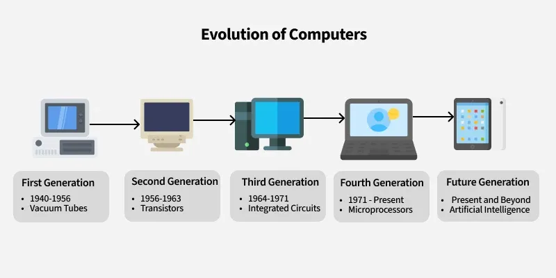

Overview
Computers have evolved through different generations, each marked by major technological advancements.
Five Generations of Computers
- First Generation (Vacuum Tubes)
- Second Generation (Transistors)
- Third Generation (Integrated Circuits)
- Fourth Generation (Microprocessors)
- Fifth Generation (Artificial Intelligence)

Comparison of Computer Generations
| Generation | Time Period | Technology | Example |
|---|---|---|---|
| First | 1940–1956 | Vacuum Tubes | ENIAC |
| Second | 1956–1963 | Transistors | IBM 7090 |
| Third | 1964–1971 | Integrated Circuits | IBM System/360 |
| Fourth | 1971–Present | Microprocessors | Personal Computers |
| Fifth | Present & Future | Artificial Intelligence | AI Systems |